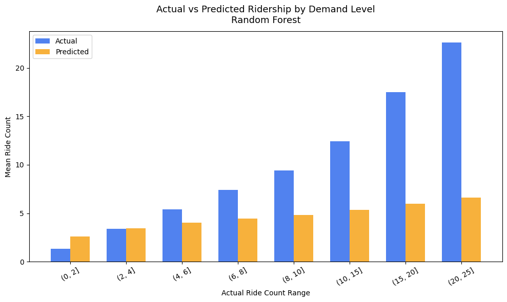
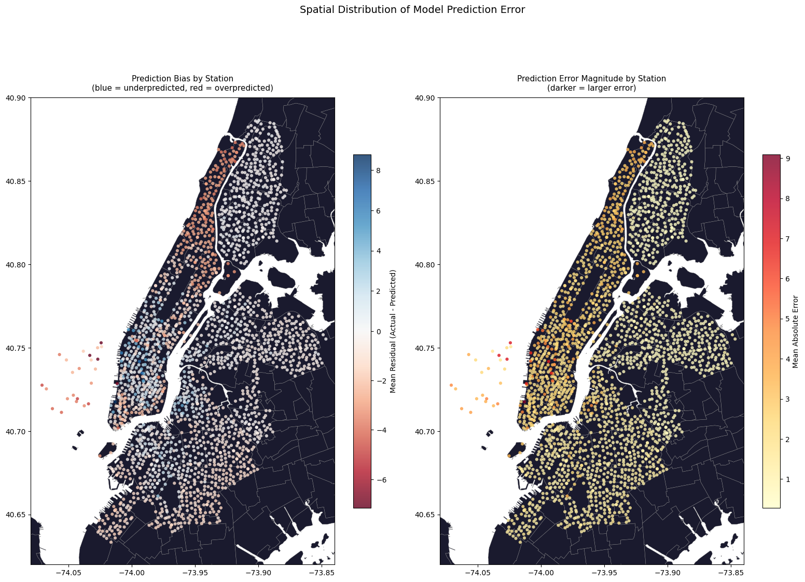

Build and evaluate models to predict hourly CitiBike departures per station. Four models compares against a mean-prediction baseline using a chronological train/test split of April and May for training, June for testing
Code
import pandas as pdimport numpy as npimport matplotlib.pyplot as pltimport matplotlib.colors as mcolorsimport seaborn as snsimport geopandas as gpdfrom sklearn.linear_model import LinearRegression, Ridge, Lassofrom sklearn.ensemble import RandomForestRegressorfrom sklearn.metrics import mean_squared_error, r2_score, mean_absolute_errorimport warningswarnings.filterwarnings('ignore')
3.1: Setup
Code
# dtype forced on start_station_id: hourly_merged.csv is large enough that pandas# infers types per chunk, parsing some ids as float and others as str. That silently# breaks the merge against station_lookup and drops every unmatched row.df_model = pd.read_csv('../data/processed/hourly_merged.csv', parse_dates=['start_hour'], dtype={'start_station_id': str})station_lookup = pd.read_csv('../data/processed/station_lookup.csv', dtype={'start_station_id': str})COLORS = {'primary': '#2563EB','secondary': '#F59E0B', 'accent': '#10B981','muted': '#94A3B8'}
3.2: Feature Engineering
16 features constructed for modeling: - Time Features: hour of day, day of week, month, is_weekend, is_rush_hour - Cyclical Encodings: sine-cosine encoding of hour and day of week to correct wraparound problem where hour 23/0, day 6/0 are numerically adjacent but temporally adjacent - Weather: temperature, precipitation, wind speed - Geographic: borough membership (one-hot encoded) - School Proximity: binary flag from station lookup
Code
df = df_model.merge( station_lookup[['start_station_id', 'near_school']], on='start_station_id', how='left')# one hot encodedf = pd.get_dummies(df, columns=['boroname'], prefix='boro', drop_first=True)# cyclical encode for periodic datadf['hour_sin'] = np.sin(2* np.pi * df['hour_of_day'] /24)df['hour_cos'] = np.cos(2* np.pi * df['hour_of_day'] /24)df['dow_sin'] = np.sin(2* np.pi * df['day_of_week'] /7)df['dow_cos'] = np.cos(2* np.pi * df['day_of_week'] /7)# define feature columnsboro_cols = [c for c in df.columns if c.startswith('boro_')]feature_cols = ['hour_of_day', 'day_of_week', 'month', 'is_weekend', 'is_rush_hour','hour_sin', 'hour_cos', 'dow_sin', 'dow_cos', 'HourlyDryBulbTemperature','HourlyPrecipitation', 'HourlyWindSpeed', 'near_school'] + boro_colstarget_col ='ride_count'# drop nulls in featuresdf_clean = df[feature_cols + [target_col, 'start_hour', 'start_station_id', 'ntaname']].dropna()df_clean[boro_cols] = df[boro_cols].astype(int)print(f"Modeling dataset shape: {df_clean.shape}")print(f"Features: {len(feature_cols)}")print([c for c in df.columns if c.startswith('boro_')])
Split on April-May (1.18M rows), test on June (582K rows). Train mean ridership is slightly higher than test mean, reflecting the previous observation of June ridership counts flattening.
Code
train = df_clean[df_clean['start_hour'] <'2024-06-01']test = df_clean[df_clean['start_hour'] >='2024-06-01']X_train = train[feature_cols]y_train = train[target_col]X_test = test[feature_cols]y_test = test[target_col]print(f"Train size: {len(train):,} rows ({train['start_hour'].min().date()} to {train['start_hour'].max().date()})")print(f"Test size: {len(test):,} rows ({test['start_hour'].min().date()} to {test['start_hour'].max().date()})")print(f"Train mean ride_count: {y_train.mean():.3f}")print(f"Test mean ride_count: {y_test.mean():.3f}")
Train size: 1,281,180 rows (2024-04-01 to 2024-05-31)
Test size: 613,056 rows (2024-06-01 to 2024-06-30)
Train mean ride_count: 3.118
Test mean ride_count: 2.898
3.4: Baseline Model
Predicts the mean ride count for every observation as a baseline for model performance down the line
Four models evaluated: Linear Regression, Ridge, LASSO, and Random Forest. Random Forest achieves the best performance, with 10.5% RMSE improvement over baseline. R2 = 0.19 reflects noise in hourly station-level ridership data. Individual features show weak pairwise correlations with ride_count, consisent once again with demand being driven by a combination of factors
Linear Regression RMSE: 2.7466 R2: 0.1536 MAE: 1.8367
Ridge Regression RMSE: 2.7466 R2: 0.1536 MAE: 1.8367
Lasso Regression RMSE: 2.7449 R2: 0.1546 MAE: 1.8414
Random Forest RMSE: 2.6835 R2: 0.1920 MAE: 1.7487
Model Comparison:
name rmse r2 mae
Baseline (mean) 2.993466 -0.005437 2.079834
Linear Regression 2.746609 0.153553 1.836705
Ridge Regression 2.746608 0.153553 1.836701
Lasso Regression 2.744948 0.154576 1.841405
Random Forest 2.683494 0.192007 1.748739
3.6: Model Comparison Plot
Comparison of model performance. The three linear models share similar values across all three metrics, showing that regularization doesn’t help much in this instance. Random forest does noticeably better than the other three models, and shows decent improvement over baseline
Actual vs predicted ridership compared across demand bins. Model handles low and moderate demand well but underpredicts high-demand periods. At actual ridership of 20-25 rides per hour, the model predicts less than 10. Peak demand events vary on a month to month basis, which might be the cause of underprediction in the model’s results.
Code
best_preds = rf_predstest_with_preds = test.copy()test_with_preds['predicted'] = best_preds# Represent the average actual vs predicted ride count at specific intervalbins = [0, 2, 4, 6, 8, 10, 15, 20, 25]test_with_preds['actual_bin'] = pd.cut(test_with_preds['ride_count'], bins=bins)binned = (test_with_preds.groupby('actual_bin', observed=True) .agg(mean_actual=('ride_count', 'mean'), mean_predicted=('predicted', 'mean'), count=('ride_count', 'count')) .reset_index())fig, ax = plt.subplots(figsize=(10, 6))x =range(len(binned))width =0.35ax.bar([i - width/2for i in x], binned['mean_actual'], width, label='Actual', color=COLORS['primary'], alpha=0.8)ax.bar([i + width/2for i in x], binned['mean_predicted'], width, label='Predicted', color=COLORS['secondary'], alpha=0.8)ax.set_xticks(x)ax.set_xticklabels([str(b) for b in binned['actual_bin']], rotation=30)ax.set_xlabel('Actual Ride Count Range')ax.set_ylabel('Mean Ride Count')ax.set_title('Actual vs Predicted Ridership by Demand Level\nRandom Forest', fontsize=13, pad=12)ax.legend()plt.tight_layout()plt.savefig('../figures/model/predicted_vs_actual.png', bbox_inches='tight')plt.show()

3.8: Residuals Over Time
Daily mean residuals across the June test period. Residuals drift negative past the midpoint of June, where the model increasingly overpredicts as the month progresses. In-line with late-June temperatures reaching into the high-80s, exceeding the training data range. The model overpredicts when the ridership plateaus in June, as seen in the time series from the EDA section. A printout of the weather pattern in the second half of June explains this phenomenon perfectly
Code
test_with_preds['residual'] = y_test.values - best_predsdaily_residuals = (test_with_preds.groupby(test_with_preds['start_hour'].dt.date) ['residual'].mean().reset_index())daily_residuals.columns = ['date', 'mean_residual']daily_residuals['date'] = pd.to_datetime(daily_residuals['date'])fig, ax = plt.subplots(figsize=(12, 4))ax.plot(daily_residuals['date'], daily_residuals['mean_residual'], color=COLORS['primary'], linewidth=1.5)ax.axhline(0, color=COLORS['secondary'], linestyle='--', linewidth=1.5, label='Zero residual')ax.fill_between(daily_residuals['date'], daily_residuals['mean_residual'], alpha=0.15, color=COLORS['primary'])ax.set_title('Daily Mean Residuals over Test Period (June 2024)', fontsize=13, pad=12)ax.set_xlabel('Date')ax.set_ylabel('Mean Residual (Actual - Predicted)')ax.legend()plt.tight_layout()plt.savefig('../figures/model/residuals_over_time.png', bbox_inches='tight')plt.show()# printout of weather data for the latter half of juneprint(df_model[df_model['start_hour'].dt.month ==6] .groupby(df_model['start_hour'].dt.date) ['HourlyDryBulbTemperature'].mean() .tail(20))
Random Forest feature importance reveals the borough of Manhattan and cyclical hour encoding as two dominant predictors, accounting for almost 75% of total feature importance. Other features have their prominence, but not as strongly as the aforementioned two
Prediction errors mapped geographically (overprediction and underprediction) concentrate the largest errors along the most traffic-dense areas in Manhattan. Reinforces the idea of the model poorly handling stations with higher-than-normal ridership counts, in comparison to low-variance outer stations, which are almost all white in the graphs.
Code
station_residuals = (test_with_preds.groupby('start_station_id') .agg(mean_residual=('residual', 'mean'), abs_residual=('residual', lambda x: x.abs().mean()), actual_mean=('ride_count', 'mean'), predicted_mean=('predicted', 'mean')) .reset_index())# merge with station coordinates & build geodataframestation_residuals = station_residuals.merge( station_lookup[['start_station_id', 'start_lat', 'start_lng', 'ntaname', 'boroname']], on='start_station_id', how='left')residuals_geo = gpd.GeoDataFrame( station_residuals, geometry=gpd.points_from_xy(station_residuals['start_lng'], station_residuals['start_lat']), crs='EPSG:4326')nta = gpd.read_file('../data/raw/spatial/nta.shp').to_crs('EPSG:4326')fig, axes = plt.subplots(1, 2, figsize=(16, 12))# plot left: mean residual per station (over vs under prediction)nta.plot(ax=axes[0], color='#1a1a2e', edgecolor="#858585", linewidth=0.3)divnorm = mcolors.TwoSlopeNorm(vmin=station_residuals['mean_residual'].min(), vcenter=0, vmax=station_residuals['mean_residual'].max())scatter0 = axes[0].scatter( residuals_geo['start_lng'], residuals_geo['start_lat'], c=residuals_geo['mean_residual'], cmap='RdBu', norm=divnorm, s=20, alpha=0.8, edgecolors='none')plt.colorbar(scatter0, ax=axes[0], label='Mean Residual (Actual - Predicted)', shrink=0.6)axes[0].set_title('Prediction Bias by Station\n(blue = underpredicted, red = overpredicted)', fontsize=11, pad=10)axes[0].set_xlim(-74.08, -73.84)axes[0].set_ylim(40.62, 40.90)# plot right: absolute error per station (where model is least accurate)nta.plot(ax=axes[1], color='#1a1a2e', edgecolor='#858585', linewidth=0.3)scatter1 = axes[1].scatter( residuals_geo['start_lng'], residuals_geo['start_lat'], c=residuals_geo['abs_residual'], cmap='YlOrRd', s=20, alpha=0.8, edgecolors='none')plt.colorbar(scatter1, ax=axes[1], label='Mean Absolute Error', shrink=0.6)axes[1].set_title('Prediction Error Magnitude by Station\n(darker = larger error)', fontsize=11, pad=10)axes[1].set_xlim(-74.08, -73.84)axes[1].set_ylim(40.62, 40.90)plt.suptitle('Spatial Distribution of Model Prediction Error', fontsize=14, y=1.01)plt.tight_layout()plt.savefig('../figures/model/spatial_residuals.png', bbox_inches='tight')plt.show()

We can look at the data a little closer and summarize the results by borough to see which boroughs the model handles best:
Some additional analysis on model performance during vs outside of rush hour. Otherwise similar, but likely offset slightly due to peak ridership periods during rush hour
print("Model Summary (Best Model = Random Forest):")print(f"Train size: {len(train):,} rows")print(f"Test size: {len(test):,} rows")print(f"Number of features: {len(feature_cols)}\n")print(f"Test R2: {rf_stats['r2']:.3f}")print(f"Test RMSE: {rf_stats['rmse']:.3f} rides per station per hour")print(f"Test MAE: {rf_stats['mae']:.3f} rides per station per hour")print(f"Improvement over baseline RMSE: {((baseline_rmse - rf_stats['rmse'])/baseline_rmse*100):.2f}%")
Model Summary (Best Model = Random Forest):
Train size: 1,281,180 rows
Test size: 613,056 rows
Number of features: 16
Test R2: 0.192
Test RMSE: 2.683 rides per station per hour
Test MAE: 1.749 rides per station per hour
Improvement over baseline RMSE: 10.35%